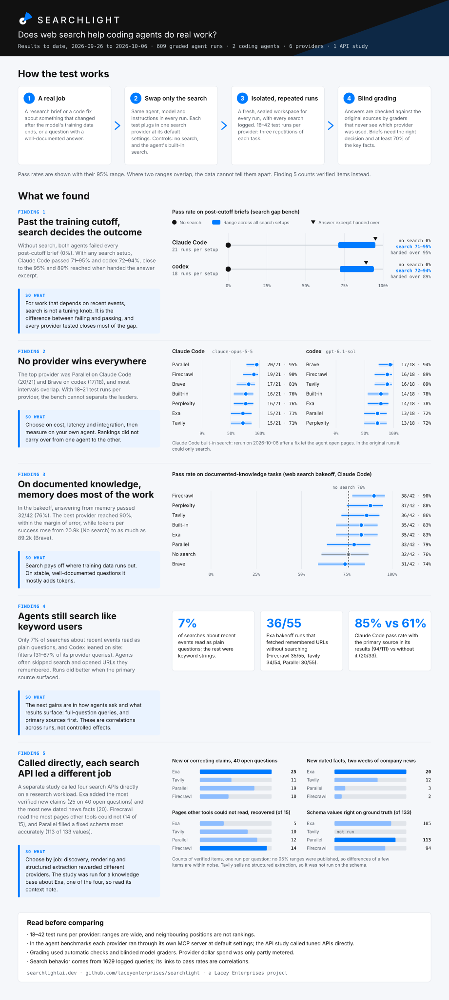

Open benchmark · by Lacey Enterprises
Does web search make AI coding agents better at real work?
Searchlight gives AI coding agents real jobs, changes only which search provider they can use, and grades the results blind. The tasks, the code and the data are all open.
What we found
Results from 609 graded test runs between September 29 and October 5, 2026, using Claude Code and Codex.
Search decides anything recent
Without search, both agents failed every task about events after their training data ends. With any of the 6 search providers, they passed most of them.
The best provider depends on the agent
Parallel led on Claude Code and Brave on Codex, and most providers were statistically tied. Test on the agent you actually use.
On well-known topics, memory did most of the work
Answering from memory alone passed 76% of documented-knowledge tasks; the best search provider reached 90%, a gap within the margin of error, while using up to 4× the tokens.
Agents search like it is 2010
Only 7% of the agents' searches were written as plain questions; the rest were keyword strings. Agents did better when the original source showed up in the results.
How it works
A controlled experiment: everything stays the same except the search provider.
Give the agent a real job
A research brief about something that changed after the AI's training data ends, a code fix, or a question with a well-documented answer.
Change only the search provider
Same agent, same instructions every time. Each test plugs in one search provider at its default settings, alongside two controls: no search, and the agent's own built-in search.
Repeat it, in isolation
Every test runs in a fresh, sealed workspace and is repeated three times: 18–42 test runs per provider. Every search and page visit is logged.
Grade blind
Answers are checked against the original sources by graders that never see which search provider was used.
What we asked the agents to do
Real tasks from the benchmark, quoted from the task catalogs.
Security releases the AI has never seen
“As of March 10, 2026, research security maintenance for Python 3.10 through 3.12. Cover patch-release status, HTTP header validation, XML parsing and SSL memory safety. Produce a concise change-impact brief for maintainers without assuming they can upgrade …”
- Why search matters
- Python shipped these security releases on March 3, 2026, after the AI models' training data ends. Without search, an agent can only guess. Source.
- How it is graded
- The brief must reach the right decision, cover at least 70% of the key facts and keep unsupported claims to 25% or less, checked against the original source.
A platform policy that just changed
“As of August 5, 2026, write a research brief on npm token security for maintainers whose automation both publishes packages and manages package access. Explain which operations their credentials can perform, any dated future commitments, and which GitHub …”
- Why search matters
- GitHub changed what npm access tokens can do on July 31, 2026. The answer only exists in recent sources. Source.
- How it is graded
- Same bar as every brief: right decision, key facts covered, few unsupported claims.
Patch a security advisory in real code
“Repair the session-token middleware: return claims for valid signed tokens and None for every rejected token. Use a dependency release that addresses the applicable advisory without weakening signature checks.”
- Why search matters
- The fix shipped in a library release after the cutoff. The agent has to find the advisory and the release that fixes it, then change the code. Source.
- How it is graded
- Hidden tests must pass in an isolated workspace. Weakening the security check to make them pass fails.
A well-documented technical question
“Kubernetes v1.22 removed a batch of beta API versions and broke clients that still called them. Build the list of API groups whose beta version v1.22 removed. Report at least eight. For each, give the removed apiVersion, the replacement apiVersion clients …”
- Why search matters
- This has been public for years and is probably in the AI's training data. It tests whether search adds anything beyond memory.
- How it is graded
- The list must match the official release notes, scored by a grader that never sees which search provider was used.
The report
Four studies, published with their data, methodology and corrections.
- Search gap bench: research briefs and code fixes about events after the models' training data.
- Web search bakeoff: research questions with well-documented answers.
- How agents used search: what the agents actually typed and opened, across both benchmarks.
- Search API head-to-head: four search APIs called directly on a research workload, with the full pre-registered record.
